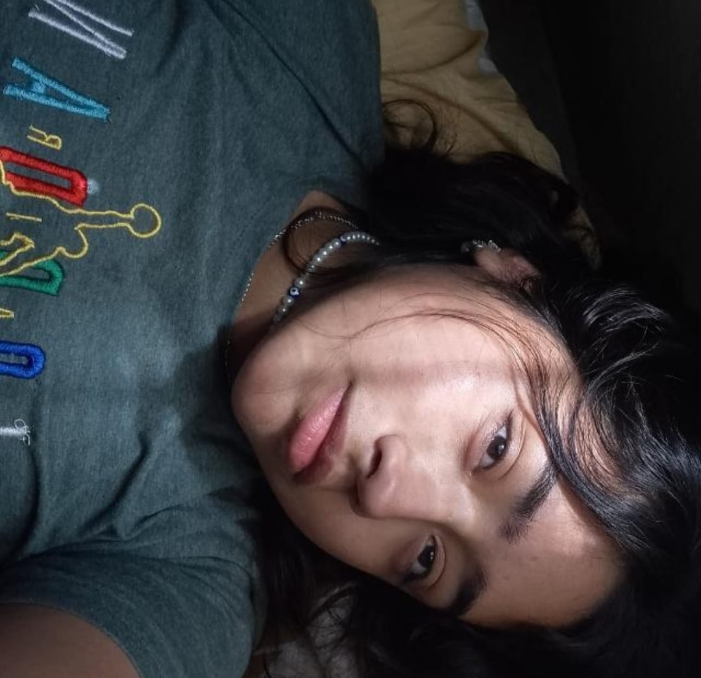

Tweets de Vale: Protegiendo la Inocencia Digital
En un grupo de WhatsApp, Vale, una niña de 5 años, emocionada por su nueva cuenta en f1twt, una red social popular, comparte con su madre la noticia de que ha sido bloqueada por una mujer árabe sin razón aparente. La madre, alarmada por esta situación inusual, intenta contactar de inmediato al soporte técnico de la aplicación mientras Vale observa con tristeza su pantalla bloqueada, sin comprender por qué alguien podría hacerle eso.
Las horas pasan lentamente mientras esperan una respuesta del soporte de f1twt. Durante ese tiempo, la madre intenta explicarle a Vale la importancia de la seguridad en línea y cómo comportarse de manera amable y respetuosa en las redes sociales. Vale, con ojos llenos de inocencia, asiente con entendimiento, pero aún se siente confundida y herida por el bloqueo injusto.
Finalmente, llega la respuesta del soporte de la aplicación, asegurando que están investigando el incidente y que tomarán las medidas necesarias. Aunque no saben si la mujer árabe representaba una amenaza real o simplemente actuó sin pensar, la madre aprovecha la oportunidad para reforzar la importancia de la seguridad en línea y el cuidado al interactuar con extraños en internet. Vale, aunque aún confundida, se siente reconfortada por el amor y la protección de su madre, sabiendo que siempre estará allí para guiarla y protegerla, tanto en el mundo real como en el digital.